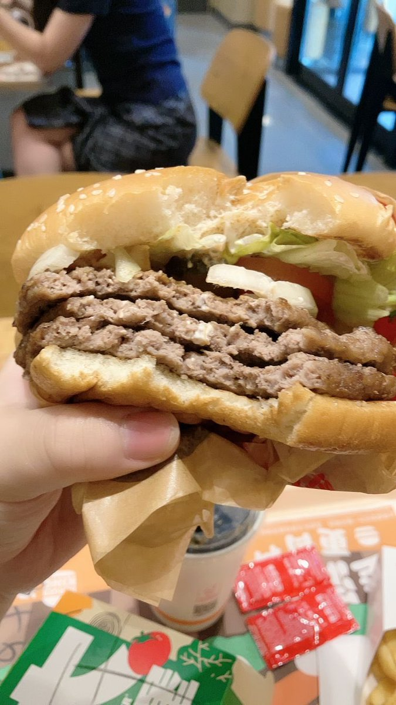

大狐帝国史官邹智萱（笔名段歌文）
@Rococo90933671
@NanaNana_os Joyeux anniversaire🥳
我最早认识的推友之一😘

7Na7Na
@NanaNana_os
其实昨天是21岁生日🎂
但是我 貌似 忘记发推了（x）
吃了@yuwilmeaning 给买到学校的蛋糕，@_sharkee1024 买的超撑三层皇堡，以及被@miaowu075 拉出去玩啦（虽然只是顺路聊天w
以及感谢朋友们，这两年仍在陪伴我的朋友们，不嫌弃我的无聊和脾气的朋友们……
祝愿新的一年 依然平安 幸运🍀 https://t.co/XiY3f3Y8m0